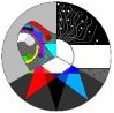

Обо мне
Зовут меня Влад Виниченко, или же RipiN. Я начинающий писатель-самоучка который предоставит вам материал который поможет вам уталить внутренюю жажду письма.
Появилась у меня эта жажда относительно недавно(пол года назад) И тогда же я начал разрабатывать свою первую историю которую я почти написал всё еще разрабатываю, а конкретнее, я почти дописал её синипсис?
Также, не маловажной частью книги являются её персонажи, к дизайну которых я стараюсь подходить также серьёзно, как и к сюжету самой книги
Все представленные здесь материалы были взяты из открытых, а главное бесплатных источников
P.S. Не стоит воспринимать меня как "Эксперта", т.к. я сам активно изучаю представленный материал.